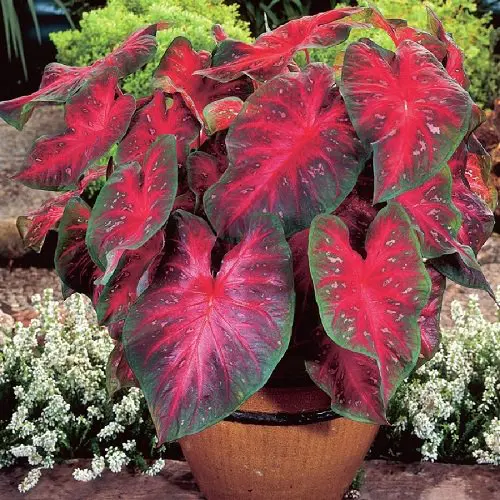
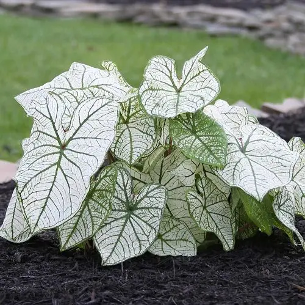
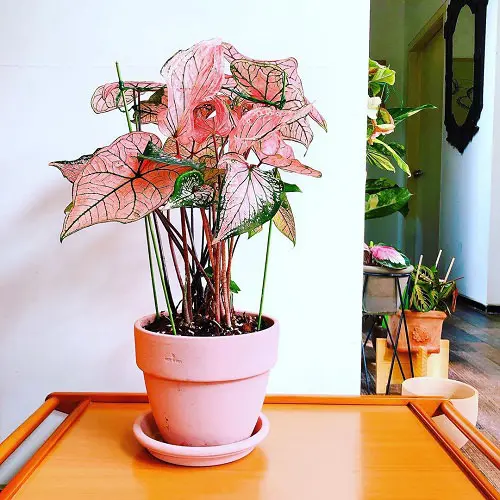
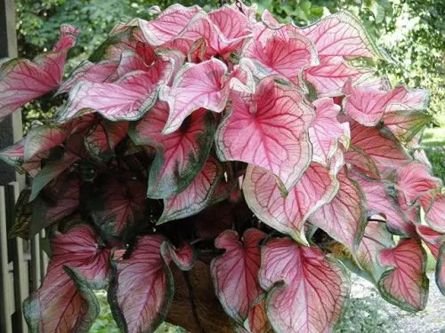
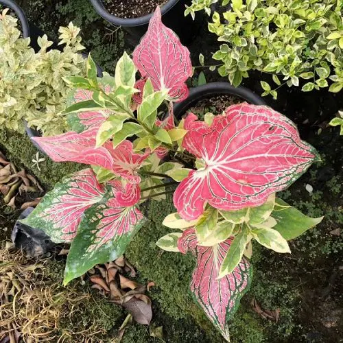
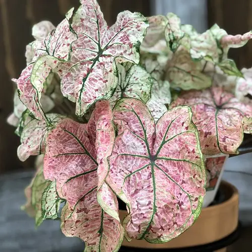

Caladium are native to tropical rainforests
and equatorial regions of South America and Latin America from Southern Mexico to Peru. Some Species are reported from the Carabian Island regions of Puerto Rico and lesser Antilles. Most Species came from the Amazon Basin in Brazil.Caladium's were first describe as caladium bicolor from specimen collected in 1973 from Madiera River in Western Brazil. The original plants had plain green leaves with plain with randomly distributed red and white spot.A larger heart shape leaf group believed to have arisen from hybrids with Caladium bicolor are called "Fancy Leaved Caladiums". The other type,a more lance shape believed to be hybrids that have Caladium picturatum blood in them, are called "Strap or Lance Leaved Caladiums".Regardness of origin, Caladium have leaves that are beutifully marked in many colors and pattern, born on slender stems. Hybrids vary in every character you can think of resulting in over 2000 named varies over the past 150. Today virtually all commercial caladium production in the world takes place in central Florida, the majority of which is done in Lakae Placid, FL. There are approximately 1,200 acre of total caladium production.The beauty of the caladium fields in summer is so striking they have been compared to the tulip fields in Holland. Because of their beauty and in an effort to expand the public awareness of caladium growers, Carolyn Phypers of happiness Farms and Dot Bates of bates sons and Daughters, decided to work together to create a caladium festival which has take dium production in the world takes place in central Florida, the majority of which is done in Lakae Placid, FL. There are approximately 1,200 acre of total caladium production.The beauty of the caladium fields in summer is so striking they have been compared to the tulip fields in Holland. Because of their beauty and in an effort to expand the public awareness of caladium growers, Carolyn Phypers of happiness Farms and Dot Bates of bates sons and Daughters, decided to work together to create a caladium festival which has take and equatorial regions of South America and Latin America from Southern Mexico to Peru. Some Species are reported from the Carabian Island regions of Puerto Rico and lesser Antilles. Most Species came from the Amazon Basin in Brazil.Caladium's were first describe as caladium Caladium are native to tropical rainforests Caladium are native to tropical rainforests. During the festival bus tours to the production fields are available so visitors can witness this incredible beauty first hand.
FLORIDA-SWEETHEART
$35.5
This strap-leaved variety has broad and small-sized leaves with a pink-red centerhaving green ruffled edges.
 FREIDA-HEMPLE
$32.5
Another fancy-leaved cultivar, it shows off medium to large leaves with a dark red center, having light green smudges and green margins.
FANNIE-MUNSON
$33
It comes in shade of pinkwith red-hued veins and green margins.Leaves are large to extra-large in size
CANDIDUM
$32
Candidum is another fancy-leaved cultivar with medium to large white and green-veined leaves. This variety can tolerate more sun as compared to other caladiums.
PINK-SYMPHONY
$36
This beautiful strap-leaved cultivar has graceful pink leaves with deep green veins. It can withstand some amount of sun exposure too.
RED-FRILL
$30
As the name suggests, it's red shading leaves are very frilly with green tips and edges. The plant cannot tolerate sunlight.
POSTMAN-JOYNER
$30
'Postman-Joyner' is also a strap-leaved variety with medium to large-sized leaves and a wide red center running through the medium green margins..
PINK-GEM
$33
It is a strap-leaved cultivar showcasing pink center, green margins, and white streak between veins. This variety can tolerate somes amount of sun.
PINK-BEAUTY
$37.5
This variety has dramatic foliage with medium to large green leaves, having pink splotches and red veins.

GINGERLAND
$40.5
This sytrap-leaf caladium variety has creamy-white small to medium-sized heart-shaped leaves adorned in green margis. The foliage is beautifully designed in pink or red splotches.
SPLASH OF WINE
$35.5
The white-pink leaves have deep green veins and cranberry-red splotches, which makes it one of the moststriking patterned catadiums.
x-Not available in the moment!-x,if you insist, maybe after 15 years 13 years from now!